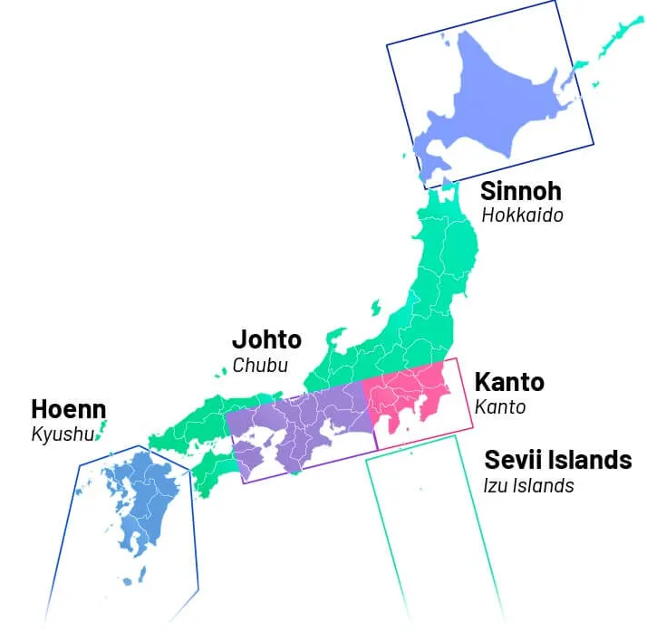

As Regiões de Pokémon e Suas Contrapartes
A geografia do mundo Pokémon é um assunto muito interessante da franquia, pois não apenas apresenta aspectos diferentes mas que ainda remetem ao nosso mundo, como também são indicativo de uma evolução criativa da obra. Até o presente momento (setembro de 2025), temos conhecimento de 9 regiões canônicas em Pokémon: Kanto, Johto, Hoenn, Sinnoh, Unova, Kalos, Alola, Galar e Paldea. Não é necessário muito para sacar as referências de cada local ao mundo real: Kalos remete à França, Alola ao Havaí, Paldea à Espanha e assim vai. Tais relações passam a ser mais obscuras, no entanto, da 4ª geração (Sinnoh) para trás: não apenas seus mapas não se assemelham a nenhum país, como a cultura de cada região parece um tanto genérica, tendo uma leve alusão ao Japão. Qual a razão por trás disso?
Para tal análise, teremos que observar a história da franquia: quando a Game Freak estava produzindo os primeiros jogos (Red & Green) nos anos 1990, Satoshi Tajiri, um dos idealizadores de Pokémon, se inspirou nas suas vivências de coletor de insetos na infância, quando vivia na cidade de Machida, numa região do Japão conhecida como Kanto. Assim, para criar o mapa de Pokémon Red & Green, Tajiri se utilizou do mapa e nome reais de onde vivia, dando origem à primeira região da franquia. Notavelmente se percebe uma escolha criativa dos produtores diferente da atual: até então, os Pokémon eram pensados como criaturas do nosso próprio mundo. Isto se percebe não só na geografia como também na caracterização do mundo e de seus personagens. Veja, por exemplo, que a descrição em inglês dada ao Líder de Ginásio do tipo elétrico, Lt. Surge, é "The Lightning American!".
Tal filosofia perdurou, em menor grau, nos jogos seguintes: Johto se assemelha à uma fusão de Kansai e Chubu, Hoenn é uma cópia da ilha de Kyushu, e Sinnoh é praticamente igual à Hokkaido. Uma grande mudança, no entanto, se observa a partir da 5ª geração, com os jogos Black & White. Nesta época, os produtores tinham o desejo de fazer um "reboot" da franquia,o que pode ser notado em diversas decisões criativas, como a história mais madura e elaborada, uma pokedéx que remete a da 1ª geração, mas principalmente, uma região fora do Japão. Mas mais do que ter o mapa inspirado em Nova York, EUA, Unova é também uma amálgama de todas as ideias e estereótipos dos japoneses em relação ao Ocidente, vide um deserto remetente à Costa Oeste americana em plena Manhattan, um personagem vestido de cowboy texano (Clay, Líder de Ginásio do tipo terra) ou a história de reinos antigos que soam mais apropriados para um país da Europa, ao invés dos Estados Unidos. O resultado foi a região de ambientação mais única da franquia, e uma nova linha criativa que permanece até hoje: um mundo semelhante, mas diferente ao nosso, com os Pokémon como parte de sua natureza.
Agora, como curiosidade, veja uma tabela onde pode comparar as regiões Pokémon e suas contrapartes em nosso mundo:
| Regiões | Contrapartes |
|---|---|
| Kanto |  Japão (Kanto, Chubu, Kyushu, Hokkaido) |
| Johto | |
| Hoenn | |
| Sinnoh | |
| Unova | Nova York, EUA |
| Unova | França |
 Alola Alola |
 Havaí, EUA Havaí, EUA |
| Galar | Reino Unido (orientado para o sul) |
| Paldea | Península Ibérica |